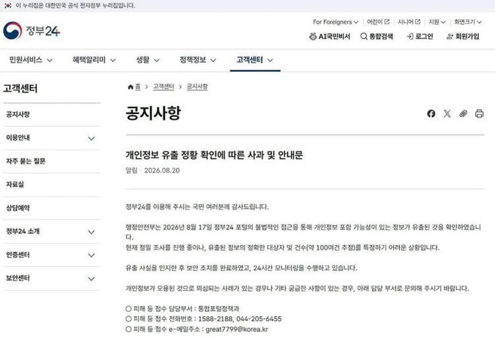

정부자체가 털림

정부자체가 털림
정부는 사과만 하고 배상안해주노
세금 50% 할인권 그런거 없냐
어어? 민생지원금 뿌려요?
어어 그건 안됩니다.
안된다..
수상하게 주변에 털린 사람들은 하나 없고
우연히 정치하는 버러지 새끼들이랑 고오급 식당에서 우연히 마주친 수백 수천억대 자산가들만 털리는 ㅋㅋㅋㅋ
어어? 투표용지 2장드려요?
어어.....
어어
네이버 정보유출 3연벙때는 온 국민이 네이버 쉴드쳤는데
쿠팡한테만 난리떤다고 쿠팡 엄청 억울할 듯ㅋㅋ
쿠팡은 나라에 들이 박은게 문제지 쿠팡만 미운털 박힌게 괜히 박힌줄아니
ㄹㅇ자꾸 쿠팡 쉴드치는데
쿠팡이 보여준 미국로비 무브는 진짜 상상도 못함
조용
정부24 털리는거보면 얼굴인증도 털렸겠네 ㅎ
금융기관도 털렸는데 사소하다 이젠 ㅋㅋ
아아 별거 아니었구나!!
유사 IT강국